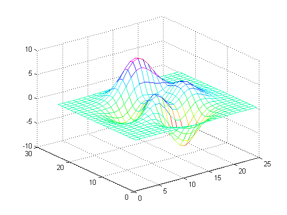
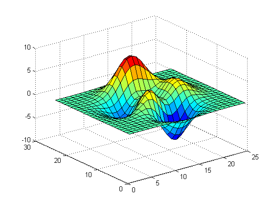
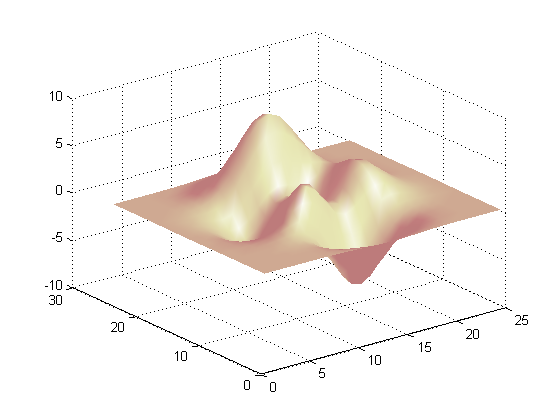
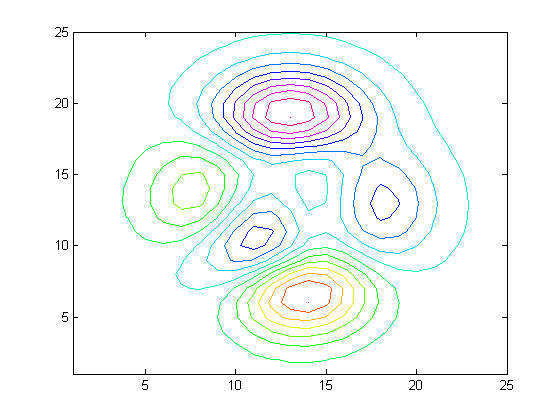
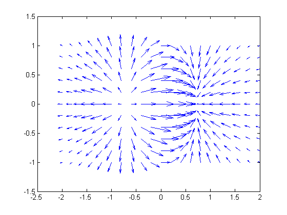
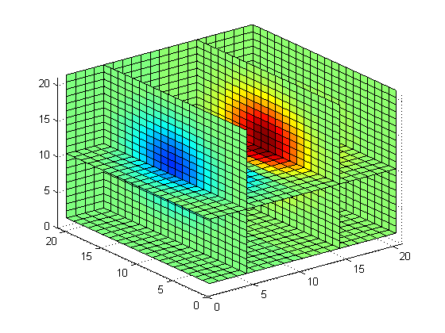

XYZ plots in MATLAB.
Here are some examples of surface plots in MATLAB.
Contents
Mesh Plot of Peaks
z=peaks(25);
mesh(z);
colormap(hsv)
 Surface Plot of Peaks
z=peaks(25);
surf(z);
colormap(jet);
 Surface Plot (with Shading) of Peaks
z=peaks(25);
surfl(z);
shading interp;
colormap(pink);
 Contour Plot of Peaks
z=peaks(25);
contour(z,16);
colormap(hsv)
 Quiver
x = -2:.2:2;
y = -1:.2:1;
[xx,yy] = meshgrid(x,y);
zz = xx.*exp(-xx.^2-yy.^2);
[px,py] = gradient(zz,.2,.2);
quiver(x,y,px,py,2);
 Slice
[x,y,z] = meshgrid(-2:.2:2,-2:.2:2,-2:.2:2);
v = x .* exp(-x.^2 - y.^2 - z.^2);
slice(v,[5 15 21],21,[1 10])
axis([0 21 0 21 0 21]);
colormap(jet)
